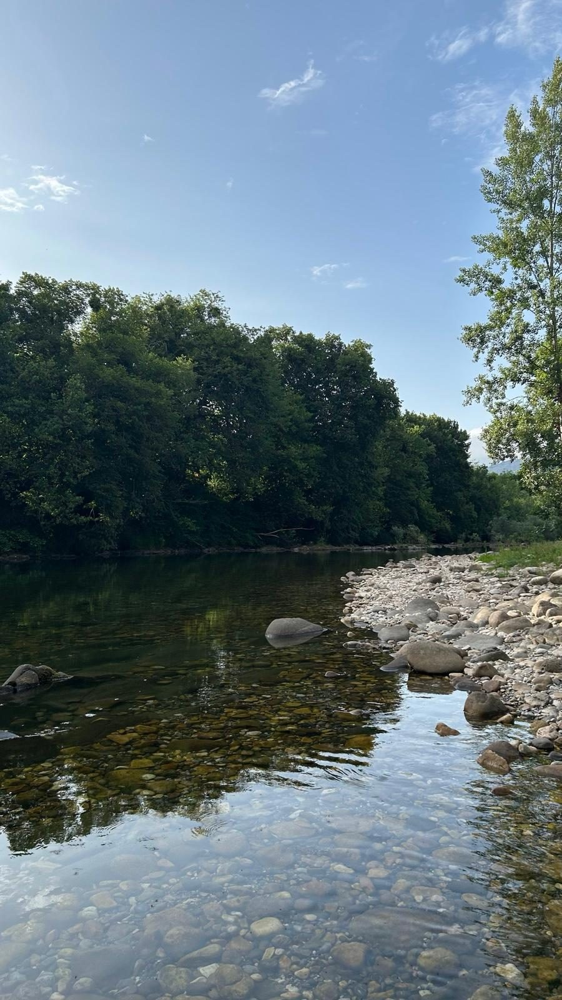
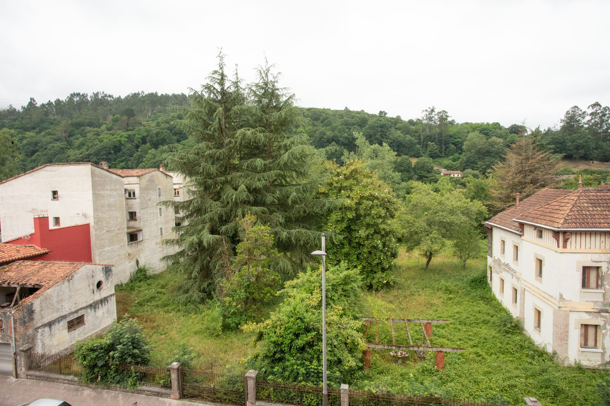
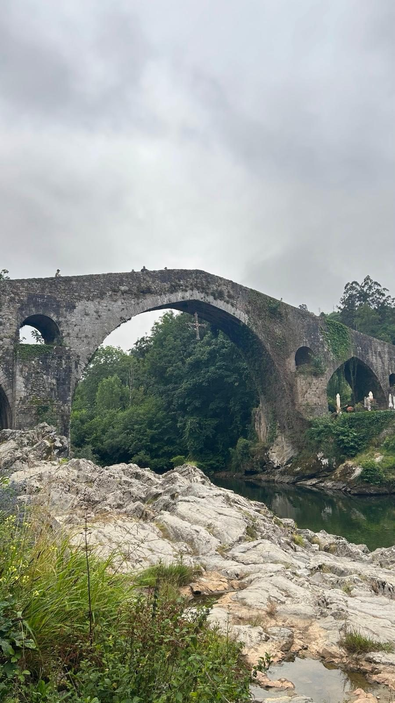

El Puente Romano
El símbolo de la villa, con su cruz de la Victoria colgando sobre el arco. Se llega andando desde el apartamento en pocos minutos.
Vivienda de Uso Turístico · Licencia VUT-7876-AS

Asturias · Puerta de los Picos de Europa
Apartamento completo en Cangas de Onís, con tres dormitorios y todo lo necesario para descansar después de un día entre ríos, montañas y sidrerías.
El alojamiento
Un piso luminoso y muy bien conservado, con muebles de madera maciza, suelo de parqué y ese punto tradicional asturiano que lo hace sentir como una segunda casa. Cocina completa, dos baños y tres dormitorios para descansar sin agobios.
Un vistazo por dentro
Todas las fotos son reales, tal cual encontrarás el apartamento el día de tu llegada.
Guía del huésped
Cangas fue la primera capital del Reino de Asturias, y hoy es la puerta de entrada a los Picos de Europa. Esto es lo que no nos cansamos de recomendar a quien se aloja con nosotros.
El símbolo de la villa, con su cruz de la Victoria colgando sobre el arco. Se llega andando desde el apartamento en pocos minutos.

Aguas claras y pozas tranquilas para refrescarse en verano, y escenario del Descenso Internacional del Sella cada agosto.

Lagos de Covadonga, Ruta del Cares, miradores... todo lo que ves desde el apartamento empieza aquí al lado.
Todo lo que solemos recomendar a quien se aloja con nosotros, con tiempos aproximados desde el apartamento.
Salud
Naturaleza
Playas
Pueblos
¿Primera vez en la zona? Al llegar te contamos en persona lo que más encaja según el tiempo que haga y los planes que tengáis.
Reservas
Gestionamos la disponibilidad directamente por teléfono o WhatsApp. Cuéntanos tus fechas y cuántos sois, y te confirmamos al momento.
Apartamento en Cangas de Onís, Asturias · A un paseo del Puente Romano y del río Sella.